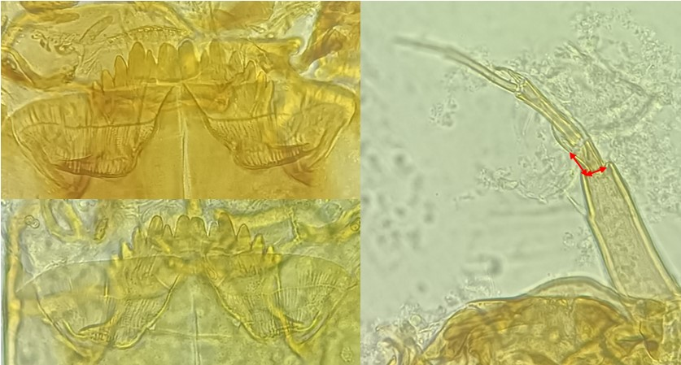
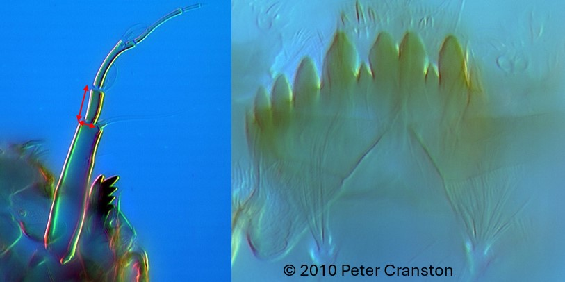

Tribu des Chironomini
Plaques ventromentales ne remontent pas sur la/les dent(s) centrale(s), mentum convexe, plaques alignées et se rejoignent au centre du mentum


Mentum avec 2 grandes dents médianes. La 1ère paire de dent latérale est accolée à la 2ème paire de
dent plus grande. Les deux soies submentale sont simples. Segment 2 de l’antenne court (la hauteur
ne fait pas plus que 2x la largeur).
Le Segment 11 du corps possède une bosse sur la face dorsale orientée vers l’avant.
Mentum avec 2 grandes dents médianes. La 1ère paire de dent latérale n’est accolée à la 2ème paire
de dent plus grande. Les deux soies submentale sont multiples. Segment 2 de l’antenne long (la
hauteur fait environ 3x la largeur).
Le Segment 11 du corps possède une bosse sur la face dorsale orientée vers l’arrière.